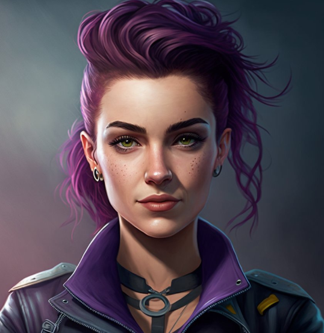
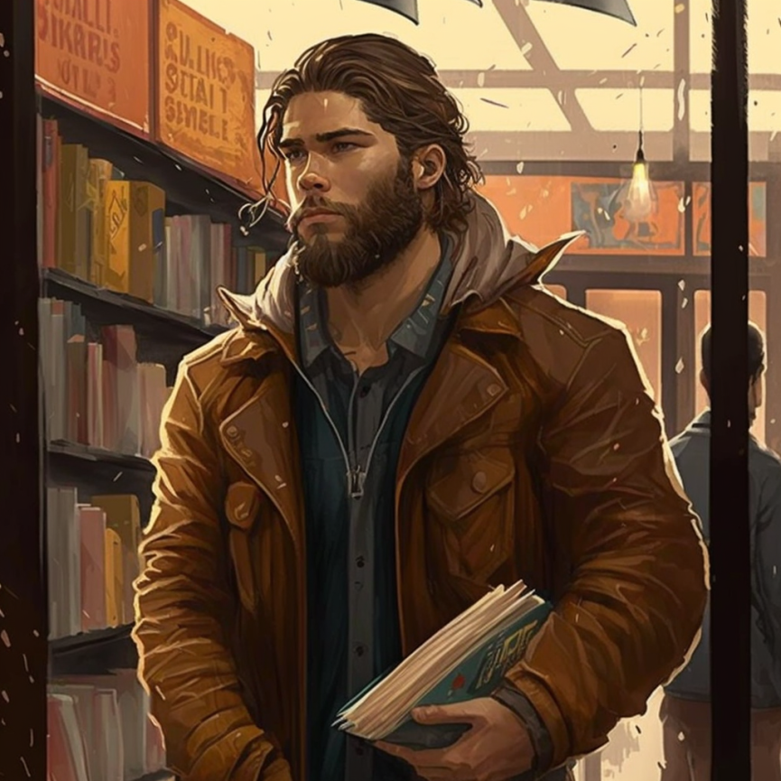

woods¶
woods is a possible novel written using ChatGPT and MidJourney as inspiration and writing aids.
Summary¶
In a small town in Eastern Tennessee, five role-playing misfit teens nostalgic for the age of punk discover a a mysterious obelisk in the nearby woods. As they delve deeper into strange occurrences in their rural community, they soon discover that their reality is not what it seems.
When the group comes across a scientist trapped in a burning car miles from the nearest road, they begin to suspect that the strange events may somehow be related to experiments at the nearby Oak Ridge National Laboratory. Discovering that zetta-scale quantum computing is thinning the walls of reality, the friends find themselves on the run from a powerful organization and at the center of a web of deceit, greed, and corruption that threatens to unravel the fabric of reality itself.
With the help of a group of 60-something year old rebels, the teens must navigate a dangerous world of government cover-ups, corporate greed, and existential horror, all while testing the limits of their friendship and musical skills.
Set in an Appalachia of the not too distant future, "woods" is a heart-pounding young adult science fiction adventure that blends the best of "The Peripheral", "Stranger Things", and the Lovecraftian universe into a thrilling yet humorous tale of discovery, rebellion, and the power of friendship. With its thought-provoking themes and edge-of-your-seat suspense, this novel is a must-read for fans of the genre and anyone who loves a good story about beating the odds and sticking it to the man.
Chapters¶
The ChatGPT Monomyth Titles are what I got when I prompted:
Outline the plot of a story that takes place in eastern Tennessee in 2032, about a group of teenagers discovering apparently occult Lovecraft inspired oddities in the woods which turn out of be due to the massive concentration of quantum computation at the Oak Ridge National Laboratory, where computation thins the layer between realities like in The Laundry series. Also be inspired by The Peripheral and Stranger Things. The main characters are slightly geeky and don't fit in well with southern culture, are progressive, like punk music. There are 3 boys and 2 girls in the core group of friends, all high-school age. There is a subplot of a love triangle, but the major plot points are about the occult, quantum computing, government coverups, and teenage rebellion.
Now for this story, give me the titles of 17 chapters, which follow Campbell's monomyth and the Harmon story circle, which posits that the protagonists move through 8 points, those being: 1) the are in a zone of comfort, 2) but they want something they don't have, 3) so they enter an unfamiliar situation, and 4) adapt to it, 5) thus getting what they wanted, but 6) pay a heavy price for it, after which they 7) return to their familiar situation, 8) having changed both themselves and the world around them.
Amusingly enough, there actually are 17 phases in Campbells' monomyth! I just picked 17 because I like prime numbers and 13 seemed too few. I can get behind the thematic mapping for the first 9 or 10 chapters, but then it gets squirrelly until the last chapter or two.
Another creative forcing function I'm going to embrace is mapping each of the chapters to a song. Given the gang's proclivity, Sex Pistols, Ramones, etc. should figure prominently, but for some rason Mr Blue Sky popped to mind when I thought about the county normies being oblivious to the changes just wrought on the world. This may have something to do with the bittersweet optimism of being just on the edge of the important things happening felt by Elton Pope as he listened to the song.
| ChatGPT Monomyth Title | Song | Short Description | Harmon | Campbell |
|---|---|---|---|---|
| Chapter 1: Small Town Life | Intro the characters, and hints at strange things in town | 1. You | 1. Call to Adventure | |
| Chapter 2: The Stirrings of Adventure | First show goes awry, but discover strange obelisk outside of town. | 2. Need | 2. Refusal of Call | |
| Chapter 3: Into the Woods | Discover Jerry Chance & the pink Cadillac | 3. Go | 3. Supernatural Aid | |
| Chapter 4: Discovering the Bizarre | Make connection to ORNL & quantum experiments | 4. Search | 4. First Threshold | |
| Chapter 5: Uncovering the Conspiracy | Try to share concerns, appearance of MIB | 5. Belly of the Whale | ||
| Chapter 6: The Price of Knowledge | Threats to self and family. Punk sense of identity falters. | 6. Road of Trials | ||
| Chapter 7: The Teenage Rebellion | Anarchy in the UK | Turning point, embrace fighting the man. | 7. Meeting with the Goddess | |
| Chapter 8: The Quantum Reality | Things get weird bruh. | 5. Find | 8. Woman as temptress, | |
| Chapter 9: The Truth Behind the Cover-up | The power behind the scenes is revealed. Teens try to go wikileaks on their ass. | 9. Anoement with the father | ||
| Chapter 10: The Dangers of the Unknown | Life and reality are crumbling. The old men offer a safe harbor. | 10. Apotheosis | ||
| Chapter 11: The Love Triangle | Taking a breath, the toll of the stress becomes apparent. Relationship tension comes to a head. | 11. Ultimate Book | ||
| Chapter 12: The Battle for the Truth | The old men introduce the kids to the kin network. Set up for the major battle. | 12. Refusal of Return | ||
| Chapter 13: The Power of Friendship | Climax. Friendship, sacrifice, and Eli save the day. The Man is exposed and experiment shut down. | 6. Take | 13. Magic Flight | |
| Chapter 14: The Return to Normalcy | Mr Blue Sky | Return home. Even more alienated as most folks have no idea what just happened. | 7. Return | 14. Rescue from Without |
| Chapter 15: The Aftermath of Change | The changes become apparent to general populace. | 8. Change | 15. Crossing Return Threshold | |
| Chapter 16: The Consequences of Action | The county comes to grip with the changes. Coach McMeanie dies humorously. | 16. Master of Two Worlds | ||
| Chapter 17: A New Reality | 17. Freedom to Live |
Characters¶
So far, the details for these are entirely human generated, though the images did come from Midjourney. Eventually I'll try to capture the process I used to create the images.
Neil¶
Neil Collins on lead guitar.
In his senior year of high school. Average height but a little lean, with wild naturally red hair that he wears a little long so that it looks like Dave Mustaine.
Neil is a massive manga fan and a talented artist, and is currently writing a graphic novel series with characters based loosely on his friends, band-mates, and folks around the county. He's following the time-honored tradition of Stan Lee and makes most of his characters names alliterative. - Fran Freckles - Bear Braveheart - Ivy Ice - Ruby Round
So far he has shared his art with no one.
Rica¶

Erica Blevins on rhythm guitar and vocals.
Also a senior. 5'6" and stunning. Most of the guys in the band have a bit of a crush on her, but she's honestly more interested in Julie, a 23 year old waitress at "The Roost", the local dive bar that's incredibly lax on carding. Spirited and both proud and embarrassed by her freckles. Long hair that she usually has dyed purple, and cuts the sides short on one side like a Belta from that old show 'The Expanse' made before Amazon was dismantled. Leather and piercings.
Erica comes from a hard home life and has an older brother named Eli who is developmentally challenged, so she fills the role of the protective older sister. This spills over to her friends, and she is quick to get 'back in their face' when anybody gives them a hard time.
Erica's mom was Paige Winters, who was the step-daughter of one of the crusty old guys who aid and abet the kids later in the story.
Note: Eli will figure prominently later in the story.
Byr¶

Byron Reynolds on bass quitar.
Byron insists on going by the name Byr, but only Erica calls him that consistently; the rest of the crew have known him for years still call him Byron. Younger than he looks and standing at a respectable 5'11", a little heavy at over 200 pounds , but to be fair a lot of it is muscle and he is "strong as a hoss". He has shoulder length light brown hair and the beginnings of a mighty beard. He is fascinated by Norse mythology, wears Thor's Hammer on a braided leather band around his neck, and plays bass guitar.
Ivy¶
Zhang Lei Min on synth and backing vocals.
Ivy Zhang is the daughter of Dr. Zhang, who moved to "the county" ten years ago to work at the hospital. She goes by Ivy to her friends, and gets embarrassed when her parents call her Xiao Lei (roughly 'little mountain' or 'little thunder') in public. The mean girls at school call her 'little lay'.
She's 4'11" with a jet-black bob haircut, which she colors blue during concerts. Originally only a fan of the band who dated Sam "for like, all of a week" when they were in ninth grade, and who would listen from the ratty couch as they practiced, she's beginning to come out of her shell and use her years of piano practice on the synths, and fills in occasionally on other people's guitars.
She's beginning to be comfortable enough to sing backup and harmony, and before the end of the story she's going to fully find her voice and SHRED IT in a spirited rendition of {FIND A SONG}.
Sam¶
Sam Green on percussion.
"Spell it like the color, no e!" he has to say 10 times a day. He has a bit of a chip on his shoulder at being the 'smallest guy in the room' at 5'6" and 133 pounds, but his incredible dexterity and ability to OWN the drums is beginning to show him that he's "like a dime in a pocket full of pennies".
Secondary Characters¶
- Ruby - unofficial band manager
- Julie - waitress at the Roost
- Eli - Erica's older brother
- The crew - crusty old guys from the mountains
Myles, one of The Crew, having a bad hair day¶
Plot Points¶
As of Friday, Feb 10, the below are almost entirely machine generated except where bolded in Chapter 1. For the first 10 chapters I would just ask "write up the story points for Chapter X" and remind it of the title. Things started going off the rails a little at Chapter 10, so I stepped up and became a little more of a heavy handed creative director.
Chapter 1: Small Town Life¶
In the small town of Sunbright in Eastern Tennessee in 2032, life is predictable and routine. Obesity is common, bad country music plays on every radio, and the only news is Fox news. Five teenagers at the center of the story are all high-school age and live in a community where everyone knows everyone else, but these 5 are united by feeling like they don't fit in.
The main characters, who are slightly geeky and don't fit in well with southern culture, are progressive and love punk music. Despite their differences, they are friends and share a bond through their love of adventure and exploration.
The chapter sets the stage for the story, introducing the characters and their daily lives in the small town. It highlights their frustrations with the limitations of small town life and their longing for something more.
The chapter also hints at the strange and bizarre occurrences in the woods outside of town, foreshadowing the events to come. Through the dialogue and interactions of the characters, the reader gets a sense of the personalities and motivations of the teens and the world they live in.
As the chapter concludes, the teens are restless and eager for something to change, setting the stage for the events of the rest of the story.
Chapter 2: The Stirrings of Adventure¶
In Chapter 2, the stirrings of adventure are palpable as the main characters begin to feel the pull of the unknown. They are restless and eager for something to change, feeling trapped by the limitations of small town life.
The teens hear rumors of strange occurrences in the woods outside of town and, fueled by their love of adventure and exploration, decide to investigate. They are drawn to the mysterious and unknown, seeking something to break the monotony of their daily lives.
As they venture into the woods, the teens discover bizarre and seemingly occult oddities, reminiscent of the works of H.P. Lovecraft. They are both frightened and exhilarated by what they see, and the adventure they set out on begins to take on a life of its own.
The chapter sets the tone for the rest of the story, establishing the theme of adventure and the pull of the unknown. It highlights the teens' desire for something more and their willingness to take risks in order to find it.
As the chapter concludes, the teens are fully committed to their investigation, setting the stage for the events of the rest of the story. They are no longer content with the limitations of small town life and are determined to uncover the truth behind the strange occurrences in the woods.
Chapter 3: Into the Woods¶
Chapter 3 sees the main characters fully committed to their investigation and venturing deeper into the woods. They are determined to uncover the truth behind the strange occurrences and the bizarre and seemingly occult oddities they have encountered.
As they delve deeper, the teens face challenges and obstacles, but their bond as friends and their shared desire for the truth keep them united. They encounter strange and mysterious creatures, adding to the eeriness of their journey.
The chapter highlights the danger and uncertainty of the unknown, and the bravery and determination of the main characters as they face their fears head-on. Through their experiences, they begin to understand the true extent of what they are up against and the importance of their mission.
As the chapter concludes, the teens make a major discovery that leads them closer to the truth and sets the stage for the events of the rest of the story. They are faced with new and even greater challenges, but they are determined to continue their investigation and uncover the secrets of the woods.
Chapter 4: Discovering the Bizarre¶
In Chapter 4, the main characters make a major discovery that leads them closer to the truth. They uncover evidence of a government cover-up, concealing the true extent of the bizarre and potentially dangerous effects of the quantum computation at the Oak Ridge National Laboratory.
As they learn more about the strange occurrences in the woods, the teens begin to realize that the quantum computation at the laboratory is thinning the layer between realities, much like in "The Laundry" series. They also discover that the laboratory is conducting experiments that could have catastrophic consequences for their town and the world.
The chapter highlights the discovery of the truth and the extent of the government cover-up. It establishes the theme of government corruption and the dangers of unchecked scientific experimentation.
As the chapter concludes, the teens are faced with a difficult decision: to continue their investigation and uncover the truth, or to stay safe and protect themselves. They must weigh the risks and benefits of their actions and decide how far they are willing to go to uncover the truth.
Chapter 5: Uncovering the Conspiracy¶
Chapter 5 sees the main characters continuing their investigation and uncovering the conspiracy behind the government cover-up. Despite the potential dangers, they are determined to uncover the truth and bring an end to the unchecked scientific experimentation at the Oak Ridge National Laboratory.
As they gather more information and evidence, the teens face resistance from those in power, who will stop at nothing to keep their secrets hidden. They must navigate a dangerous and unpredictable reality as they uncover the truth, using their wit and resourcefulness to stay one step ahead of their opponents.
The chapter highlights the danger and uncertainty of the investigation, as well as the bravery and determination of the main characters. It establishes the theme of teenage rebellion against those in power and the importance of standing up for what is right.
As the chapter concludes, the teens make a major breakthrough in their investigation and are faced with a new and even greater challenge. They must use all of their skills and knowledge to overcome this obstacle and uncover the truth, no matter the cost.
Chapter 6: The Price of Knowledge¶
Chapter 6 sees the main characters paying the price for their determination to uncover the truth. Despite their bravery and resourcefulness, they find themselves in a dangerous and life-threatening situation as they continue their investigation.
As they uncover more about the government cover-up and the extent of the unchecked scientific experimentation, the teens realize the true extent of the danger they are in. They must weigh the risks and benefits of their actions and decide whether the cost of their investigation is worth it.
The chapter highlights the heavy price that must be paid for knowledge and the consequences of standing up against those in power. It establishes the theme of sacrifice and the importance of persevering despite the odds.
As the chapter concludes, the teens make a difficult decision that will have far-reaching consequences. They must face the consequences of their actions and continue their investigation, no matter the cost. The stage is set for the events of the rest of the story, as the teens face their greatest challenge yet.
Chapter 7: The Teenage Rebellion¶
Chapter 7 marks the turning point in the story, as the main characters fully embrace their role as rebels against those in power. The events of the previous chapter have galvanized them and they are more determined than ever to uncover the truth and bring an end to the unchecked scientific experimentation at the Oak Ridge National Laboratory.
The teens band together, using their wit, resourcefulness, and courage to fight against those in power and uncover the truth. They are no longer content with the limitations of small town life and are determined to make a difference in the world.
The chapter highlights the theme of teenage rebellion and the power of friendship. It showcases the determination and bravery of the main characters and their unwavering commitment to their cause.
As the chapter concludes, the teens launch a bold plan to uncover the truth and bring an end to the government cover-up. They must use all of their skills and knowledge to succeed, knowing that the stakes are higher than ever. The events of the rest of the story will be shaped by the success or failure of their rebellion.
Chapter 8: The Quantum Reality¶
Chapter 8 takes the main characters into the heart of the quantum reality and the full extent of the unchecked scientific experimentation at the Oak Ridge National Laboratory. They are faced with the consequences of their actions and the reality of the situation they have uncovered.
The teens must navigate a dangerous and unpredictable reality, as they come face to face with the bizarre and potentially dangerous effects of the quantum computation. They must use all of their skills and knowledge to survive and find a way to stop the experiments before it's too late.
The chapter highlights the dangers and consequences of scientific experimentation, as well as the bravery and determination of the main characters. It showcases the full extent of the bizarre and unpredictable quantum reality and the importance of stopping the experiments.
As the chapter concludes, the teens make a critical decision that will determine the outcome of their rebellion and the future of their town and the world. They must use all of their skills and knowledge to succeed, as the stakes have never been higher.
Chapter 9: The Truth Behind the Cover-up¶
Chapter 9 sees the main characters finally uncovering the truth behind the government cover-up and the unchecked scientific experimentation at the Oak Ridge National Laboratory. They are faced with the full extent of the danger and the consequences of the experiments, and must make a decision about what to do next.
The teens must navigate a complex web of lies, deceit, and corruption as they uncover the truth behind the cover-up. They must use their wit, resourcefulness, and courage to expose the truth and bring an end to the experiments before it's too late.
The chapter highlights the importance of uncovering the truth and the consequences of government corruption. It showcases the bravery and determination of the main characters as they face the full extent of the danger and the consequences of their actions.
As the chapter concludes, the teens make a bold move to expose the truth and bring an end to the experiments. The stage is set for the final showdown, as the teens use all of their skills and knowledge to save their town and the world from the dangerous effects of the quantum computation.
Chapter 10: The Dangers of the Unknown¶
Chapter 10 took a rewrite or two - ChatGPT was trying to end things here and generally started to lose coherence. I reminded it about what it had suggested for chapter 9 and told it to keep going.
Chapter 10 follows the events of Chapter 9, in which the main characters uncovered the truth behind the government cover-up and the unchecked scientific experimentation at the Oak Ridge National Laboratory. In Chapter 10, the full extent of the dangers of the unknown are revealed as the teens face their greatest challenge yet.
The teens are in a race against time to stop the experiments and save their town and the world from the dangerous effects of the quantum computation. They must navigate a dangerous and unpredictable reality, using all of their skills and knowledge to survive.
The chapter highlights the dangers and consequences of taking on those in power and the importance of standing up against government corruption. It showcases the bravery and determination of the main characters as they face the full extent of the danger and the consequences of their actions.
As the chapter concludes, the teens are in a critical moment of the story, as they must use all of their skills and knowledge to stop the experiments and save their town and the world from the dangerous effects of the quantum computation. The stage is set for the final showdown, as the teens take on the government and those in power in a battle to expose the truth and bring an end to the experiments.
Chapter 11: The Love Triangle¶
After the missteps w/ chapter 10, I started getting a little more prescriptive:
Now, how about the story points / talking points for "Chapter 11: The Love Triangle", in which the stress of the events of "Chapter 10: The Dangers of the Unknown" threaten to rupture the friendship of two of the male characters due to their mutual feelings for one of the female characters.
Chapter 11 introduces a subplot of a love triangle, as the stress of the events in Chapter 10 begins to take a toll on the main characters. Two of the male characters are revealed to have mutual feelings for one of the female characters, threatening to rupture their friendship.
As the teens face the full extent of the dangers of the unknown and the final showdown with those in power, the love triangle adds to the already high stakes of the story. The male characters must navigate their feelings for the female character, as well as their loyalty to each other, in order to keep their friendship intact.
The chapter highlights the theme of love and relationships, as well as the importance of friendship and loyalty in the face of adversity. It showcases the challenges that the main characters face in their personal lives, as they balance their feelings with the demands of their mission.
As the chapter concludes, the male characters are faced with a difficult decision about what to do next, as the stress of the love triangle threatens to disrupt their friendship and mission. The stage is set for the final showdown, as the teens must navigate their personal feelings and relationships in order to succeed in their mission to stop the experiments and save their town and the world.
Chapter 12: The Battle for the Truth¶
Here I started taking an even heavier hand and guided it to include the old guys:
Excellent, now write the story points / talking points for "Chapter 12: The Battle for the Truth" in which the interpersonal stress that came to a head in "Chapter 11: The Love Triangle" is resolved and the novel comes to it's penultimate climax, pitting a newly reinvigorated group against the unethical criminal conspiracy. The group has expanded to include numerous memorable characters from the surrounding towns, including a group of 60-something year olds who were martial artists, emergency medical technicians, and hackers in their younger days. The expanded group of characters are fascinating and will each have their own spin-off novel someday.
Chapter 12 marks the penultimate climax of the story, as the main characters and their allies come together to face the unethical criminal conspiracy. The interpersonal stress that came to a head in Chapter 11 is resolved, as the characters come together to take on the final challenge.
The group of characters has expanded to include numerous memorable allies from the surrounding towns, including a group of 60-something year olds who were martial artists, emergency medical technicians, and hackers in their younger days. These characters add to the already rich cast of characters and provide a unique perspective on the events of the story.
As the group faces off against the unethical criminal conspiracy, they use all of their skills and knowledge to expose the truth and bring an end to the dangerous experiments at the Oak Ridge National Laboratory. The chapter highlights the bravery and determination of the main characters, as well as the importance of teamwork and unity in the face of adversity.
As the chapter concludes, the stage is set for the final showdown, as the expanded group of characters use all of their skills and knowledge to stop the experiments and save their town and the world. The chapter showcases the exciting and dynamic interactions of the characters and sets the stage for the thrilling conclusion of the story.
Chapter 13: The Power of Friendship¶
I think maybe ChatGPT was getting tired by now. It originally started with "Chapter 13 marks the conclusion of the story...". I started to feel like I was scolding a child:
No, the story doesn't conclude in Chapter 13. Rewrite the story points / talking points of "Chapter 13: The Power of Friendship", ending with the final showdown, but which will have following chapters outlining the aftermath of the of the battle and the attempts to return to normal.
Chapter 13 marks the climax of the story, as the power of interpersonal loyalty and brotherly love comes to the fore in the final showdown against the unethical criminal conspiracy. The main characters and their allies use their skills and knowledge to stop the experiments and bring an end to the dangerous situation at the Oak Ridge National Laboratory.
Throughout the story, the main characters have faced challenges and obstacles, but they have always had each other to rely on. The chapter highlights the importance of friendship and the power of unity in the face of adversity.
As the final showdown takes place, the main characters and their allies use their skills and knowledge to stop the experiments and bring an end to the unethical criminal conspiracy. The chapter showcases the bravery and determination of the main characters, as well as the power of friendship and brotherly love to triumph over evil.
As the chapter concludes, the main characters are triumphant, having put an end to the dangerous experiments and exposed the government cover-up. However, the story is far from over, as the aftermath of the battle must be dealt with and the town and the world must attempt to return to normal. The chapter ends on a note of both triumph and uncertainty, as the main characters look forward to what comes next.
Much better.
Chapter 14: The Return to Normalcy¶
Chapter 14 marks the aftermath of the final showdown, as the main characters and their allies attempt to return to normalcy. The chapter explores the characters' realization and acknowledgement of how much the world around them has changed, and the challenges they face as they attempt to adjust to their new reality.
As the characters come to terms with the events of the story, they feel a newfound sense of belonging thanks to their strengthened relationships and their realization that there is a larger culture of freaks like them fighting for a better future. This includes the 60-something year olds introduced in Chapter 13, who provide a unique perspective on the events of the story.
However, the characters also feel even more disconnected from much of the southern "normie" culture around them, who are completely unaware of the tremendous changes to the world that have occurred through the course of the story. This disconnection adds a new layer of complexity to the characters' attempts to return to normalcy, as they struggle to find their place in a world that has changed so much.
The chapter highlights the theme of adjusting to change, as well as the challenges of fitting in and finding one's place in the world. It showcases the character's growth and development, as they navigate the aftermath of the final showdown and attempt to return to a sense of normalcy.
As the chapter concludes, the stage is set for what comes next, as the characters look forward to a future filled with challenges, growth, and adventure. The chapter ends on a note of hope and uncertainty, as the characters embrace their newfound sense of belonging and prepare for what the future holds.
Chapter 15: The Aftermath of Change¶
Multiple rewrites required on this too...
Thanks, now the story points / talking points for "Chapter 15: The Aftermath of Change" in which the changes to reality that occurred throughout chapters 11 to 13 begin to become apparent to even the normal citizens of the town, foreshadowing the necessity of a follow-up book in the series.
No, rewrite the story points / talking points of "Chapter 15: The Aftermath of Change" with more of a focus on the downsides of the change. Also re-introduce a minor villain that we thought was vanquished who is vanquished in a satisfying and humorous manner.
Chapter 15 explores the aftermath of the changes to reality that occurred throughout Chapters 11 to 13, with a focus on the downsides of the change. The chapter focuses on the challenges and obstacles that the characters face as they navigate the aftermath of the final showdown and attempt to return to a sense of normalcy.
As the town begins to come to terms with the reality of the situation, the characters are faced with new difficulties and obstacles. They must deal with the consequences of their actions, as well as the unexpected fallout from the changes to reality.
In addition, a minor villain who was thought to have been vanquished makes a surprising reappearance, causing further complications for the main characters. However, in a satisfying and humorous turn of events, the villain is defeated once and for all, bringing closure to the story.
The chapter highlights the theme of the consequences of change, as well as the importance of perseverance and determination in the face of adversity. It showcases the character's growth and development, as they face the downsides of the change and find a way to overcome the obstacles in their path.
As the chapter concludes, the stage is set for what comes next, as the characters look forward to a future filled with challenges, growth, and adventure. The chapter ends on a note of hope, as the characters embrace the changes to their world and look forward to a brighter future, having learned the importance of perseverance and determination in the face of adversity.
Chapter 16: The Consequences of Action¶
Now write the story points / talking points for "Chapter 16: The Consequences of Action", which resolves the sub-plots of the story and resolves any remaining plot or interpersonal tension. In it the characters check with their expanded group of friends and family, setting up each for a spinoff.
Chapter 16 marks the resolution of the sub-plots of the story and the resolution of any remaining plot or interpersonal tension. The chapter focuses on the characters as they reflect on the events of the story and come to terms with the consequences of their actions.
Throughout the story, the main characters have faced challenges and obstacles, but they have always had each other to rely on. In this chapter, the characters check in with their expanded group of friends and family, including the 60-something year olds introduced in Chapter 13 and the new allies they have made along the way.
As the characters reflect on their experiences, they set each other up for their own spinoff stories, showcasing the importance of community and the power of friendship. The chapter highlights the theme of the consequences of action, as well as the importance of reflection and growth.
As the chapter concludes, the story comes full circle, as the characters return to their zone of comfort, having changed both themselves and the world around them. The chapter ends on a note of hope, as the characters look forward to a future filled with new challenges, growth, and adventure.
The chapter serves as a fitting conclusion to the story, tying up loose ends and showcasing the growth and development of the main characters. The stage is set for the next chapter in their story, as the characters embrace their newfound sense of belonging and prepare for what comes next.
Chapter 17: A New Reality¶
Now, finally, write the story points / plot points of "Chapter 17: A New Reality", which closes the book but ends of a minor cliffhanger setting up the next book of the series.
Chapter 17 marks the conclusion of the book, as the characters come to terms with their new reality and look forward to what comes next. The chapter serves as a fitting conclusion to the story, tying up loose ends and showcasing the growth and development of the main characters.
Throughout the story, the characters have faced challenges and obstacles, but they have always had each other to rely on. In this chapter, the characters embrace their newfound sense of belonging and prepare for what comes next, as they look forward to a future filled with new challenges, growth, and adventure.
As the chapter concludes, the stage is set for the next book in the series, as the characters face a new reality and a new set of challenges. The chapter ends on a cliffhanger, leaving the reader eager for the next chapter in the story.
The cliffhanger sets the stage for the next book in the series, as the characters face a new reality and a new set of challenges. The chapter ends on a note of excitement and anticipation, as the characters look forward to what comes next and the reader eagerly awaits the next book in the series.